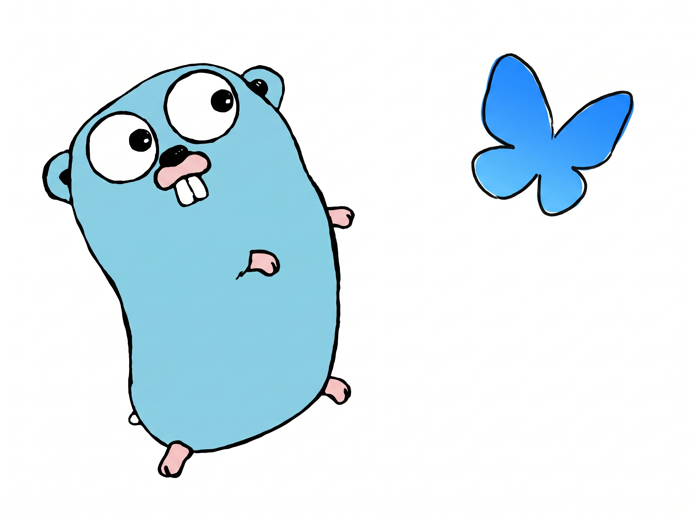
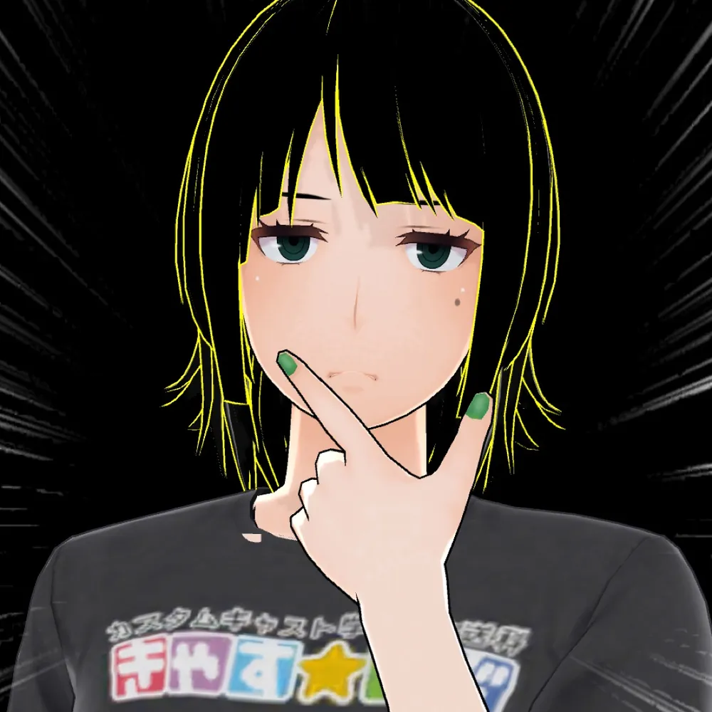
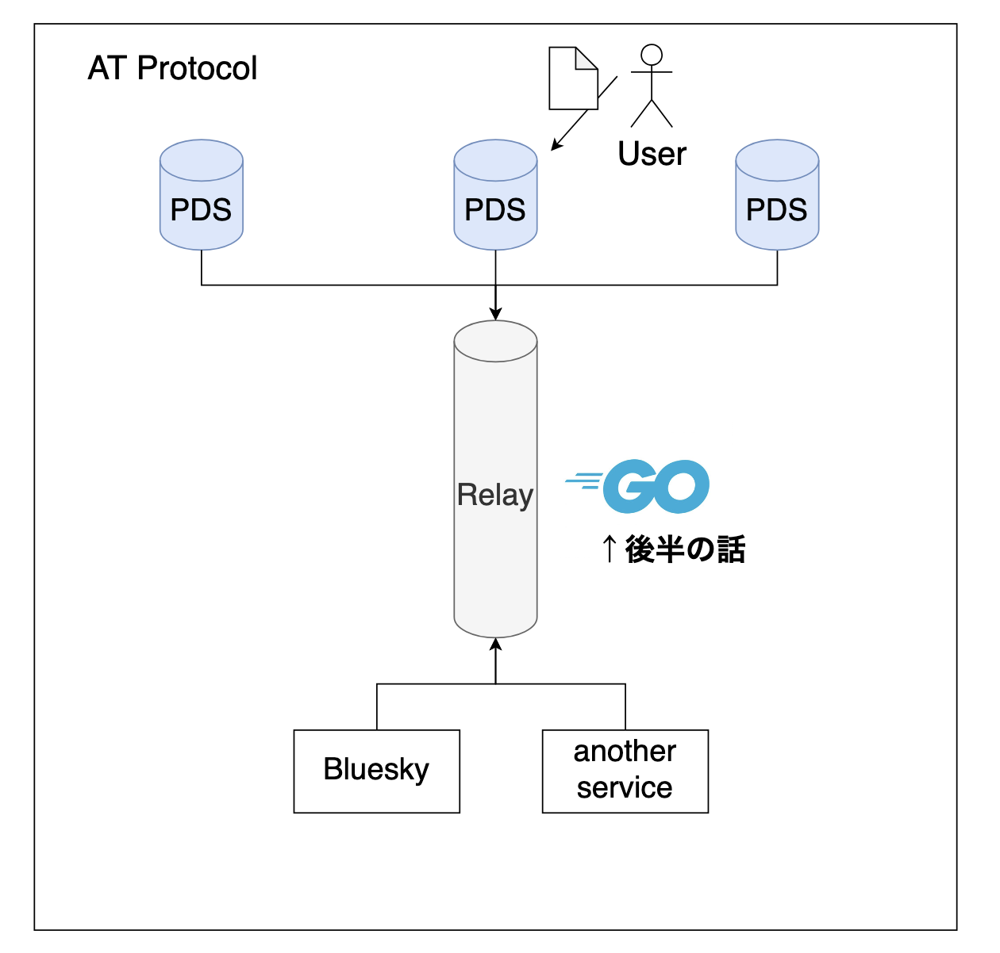

01
ユーザーデータを
パートナー企業に売却
ユーザーが生み出した投稿や行動データを、企業の収益源として外部に売る。

@taumu.bsky.social
UGC（ユーザーが作る投稿）を集め、そのデータから得られる利益を運営企業が独占できる構造だった。
ユーザーが生み出した投稿や行動データを、企業の収益源として外部に売る。
何を消し、何を見せるかを運営が一方的に決める。ユーザーは選べない。
外部からデータにアクセスする手段を絞り、データを囲い込む。
データ主権＝自分のデータを誰が持ち、どう使うかを決める権利。
用語の補足
データの管理権は利用者側に置く一方、全体のデータを処理する計算リソースはRelayに集約した。
PDSを選び、必要なら別のPDSへデータを移行できる。
RelayがPDSからのイベントを集め、サービスへ配信する。

Bluesky Hackathon 最優秀賞
AT Protocol, x402などインターネットをよくしそうな技術に興味あり
Blueskyの非公式デザインシステムをAIに読み込ませてHTMLを生成しました。
一つのDIDを保ったまま、データを別のPDSへ移行できる。
各PDSから更新を受け取り、アプリが利用できるストリームとして配信する。
アプリはBlueskyのAPIを使うか、独自にRelay購読用のストリームを運用する。
「分散型」が何を指すのか、仕組みごとに整理する。
別のもの。AT Protocolはデータ主権を支えるプロトコル。Blueskyはその上にあるSNSで、Bluesky社はRelayなどの基盤も提供する。
はい。Relayは集約型。データ主権を優先し、それ以外の部分では使いやすさとの両立を図っている。
単一事業者への依存はリスクになる。アカウント管理を第三者機関へ移管できれば、特定企業への依存を減らせる。
SNSは広告で稼ぐ場から社会インフラへ変わるべきだと考える。有料プランやサードパーティアプリのロイヤリティも収益源にし、利用者・開発者・運営者に利益が回る形を目指す。

atproto（TypeScript）とindigo（Go）の2つのリポジトリで役割を分けている。
bluesky-social/atprotoリクエストに応えるAPI・SDK
PDSユーザーのデータを保管し、APIを提供AppViewタイムラインなど app.bsky.* のAPIOzoneモデレーション用のサービスSDK・OAuthアプリ開発者向けのクライアントbluesky-social/indigo全PDSのイベントを流し続ける基盤
Relay全PDSを購読し、Firehoseとして再配信rainbowFirehoseを多数の購読者へfan-outTap同期・バックフィル・署名検証hepaイベントを見て自動モデレーション@atproto/tap クライアントで使う分散したPDSからイベントを集約し、Firehoseとして購読者へ配信する。
indigo/cmd/relayPDSごとのgoroutine各PDSのWebSocketを読み続ける
channel + worker poolCBORをデコードし、署名を検証。workerが分担
購読者ごとのchannel同じバイト列を並行送信。遅い購読者は切り離す
この両立は、メジャーなプログラミング言語でもあまりない気がする。
接続とイベント受信をイテレータにまとめ、呼び出し側はイベント処理に集中する。
接続、イベントの受信、終了処理をまとめる。
func (c *Client) Seq(ctx) iter.Seq2[Msg, error] { return func(yield func(Msg, error) bool) { conn := dial(ctx) // 接続 defer conn.Close() // 後始末 for { if !yield(conn.Read()) { return } // 受信 } } }
接続のことは気にせず、届いたイベントを処理するだけ。
for msg, err := range client.Seq(ctx) { handle(msg) }
breakした時に、イテレータ側のdeferで確実に後始末できるのもGoの特徴。